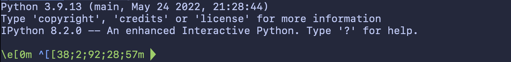

Whoever put a colorized prompt and syntax highlighting into IPython is a genius. The green-red back-and-forth between input and response makes scrolling back through a terminal session smooth and readable, and coloring individual tokens by semantic meaning is both informative and easy on the eyes.
However, if you use any kind of a custom terminal theme, this experience gets bumpier. IPython will generally lean on the basic ANSI colors set by your terminal, but (at least in my case -- running zshell within Alacritty/Tmux) also summons a few colors that are definitely not in the specified color set, and can be pretty hard to read (bad) and ugly (obviously way worse).
Some of these are coming from my terminal -- the light-green in the prompt, and the red traceback boundaries are correct. The dark green/bold, and especially the bolded blue in the traceback, are straight from IPython. And the latter is basically unreadable against my background.
There are a few out-of-the-box changes that can help, sort of. The IPython config provides a few options:
## Set the color scheme (NoColor, Neutral, Linux, or LightBG).
# c.InteractiveShell.colors = 'Neutral'
# ...
## The name or class of a Pygments style to use for syntax highlighting. To see
# available styles, run `pygmentize -L styles`.
# c.TerminalInteractiveShell.highlighting_style = 'gruvbox-dark'
## Override highlighting format for specific tokens
# c.TerminalInteractiveShell.highlighting_style_overrides = {}
InteractiveShell.colors sets a general color scheme, affecting input syntax highlighting and feedback, but only offers four theme options. TerminalInteractiveShell.highlighting_style (and TerminalInteractiveShell.highlighting_style_overrides) provide many more choices by allowing the user to specify the colors that IPython provides to Pygments for highlightingtext, but can't alter the colors used in feedback text (eg exception tracebacks).
Now, the Pygments stuff is pretty great. It's a regex-based highlighter, which means anyone used to tools like Treesitter will be a little disappointed, but it still affords a decent amount of granularity for color choices, and lets you define general token classes (like Number) and then provide different selections for subcomponents (like Number.Float). I couldn't find a master list of token types used in the Python lexer, though, so I had to reconstruct an approximation from the source code:
| Token | What's included |
|---|---|
Text |
Catch-all for anything not otherwise defined |
String |
Includes multiline comments, too |
String.Escape |
Escape sequences within strings |
String.Interpol |
The brackets in f-strings |
Number |
All numbers |
Number.Integer |
Ints |
Number.Float |
Floats |
Number.Bin |
Binary numbers |
Number.Oct |
Octals |
Number.Hex |
Hex values |
Comment |
Single-line comments |
Keyword |
Lots of members -- stuff like def, class, True and False, if/elif/else etc. |
Keyword.Constant |
True, False, and None |
Keyword.Reserved |
A few core tokens like except, finally, if, raise, while, etc |
Keyword.Namespace |
import, and from/import |
Operator |
Everything you'd expect, and also the Walrus |
Operator.Word |
in, is, and, or, not |
Punctuation |
Brackets and parens |
Name.Builtin |
Builtin functions like all(), max(), iter() |
Name.Builtin.Pseudo |
Stuff like self, Ellipsis, NotImplemented, cls |
Name.Exception |
All of the builtin Exception types |
Name.Function |
the name of the function in the definition |
Name.Function.Magic |
Builtin dunder methods |
Name.Variable.Magic |
Builtin dunder object attributes |
Name.Decorator |
Both the @ and the decorator name |
Name.Class |
I think this should be the name in the class definition but couldn't confirm experimentally |
This enables some progress:
But tracebacks are still a catastrophe:
You can use the InteractiveShell setting mentioned above to turn off these colors entirely (nocolor) or make them insane (LightBG). But, even though Pygmentize does provide a lexer for tracebacks, you can't use any kind of custom colors there. So, you're stuck.
On a lighter note, You can also configure the prompts, which is cool. The IPython config docs are a bit better here than on the color scheme, although I think the actual prompt file is more informative than the example they point to.
from IPython.terminal.prompts import Prompts, Token
class MyPrompt(Prompts):
def in_prompt_tokens(self, cli=None):
return [(Token.Prompt, '\e[0m \033[38;2;92;28;57m \uE0B0')]
## Class used to generate Prompt token for prompt_toolkit
c.TerminalInteractiveShell.prompts_class = MyPrompt
Powerline glyphs like the above will work, but colorization using ANSI escape codes will... unfortunately not, which is unsurprising. You are at the whims of the Pygments tokens that you provide, and it's not clear to me whether there's any hope of overriding the token colors outside of the parent InteractiveShell.colors specification.

Anyway, here's to hoping that someone jumps on this stuff in a future IPython PR.